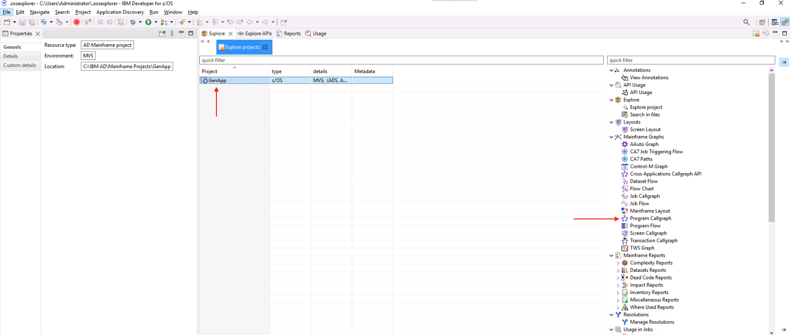
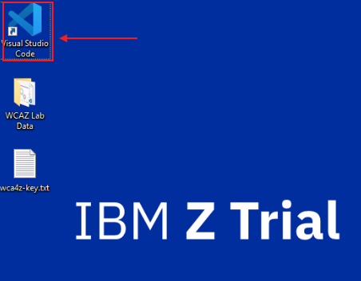
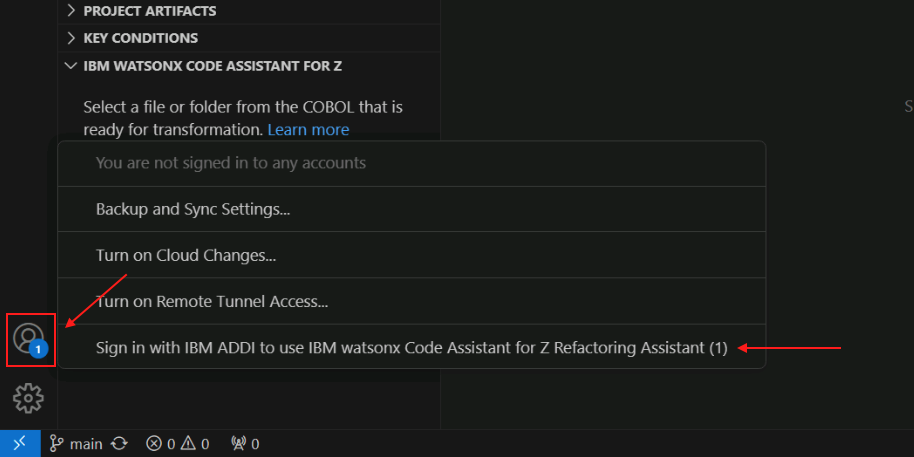
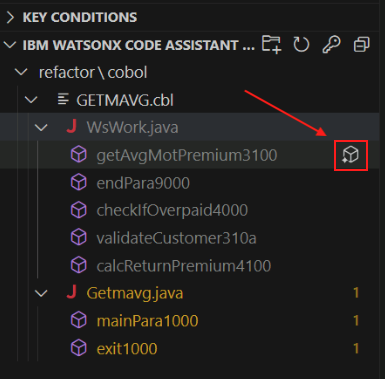
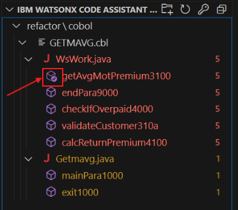

watsonx Code Assistant for Z Workshop¶
Agenda¶
| Activity | Time |
|---|---|
| Presentation and Demonstration | 10:00 am - 11:00 am US EDT |
| Hands-on, self-paced lab | 11:00 am - 4:00 pm US EDT |
Presentation¶
Lab¶
- Start here with the Lab Overview.
Workshop Environment Architecture¶
Please visit this page to see the architecture of the workshop's lab environment.
Workshop Owners¶
Acknowledgement¶
Thank you to Ashish Sahoo of IBM Consulting whose hard work maintaining the watsonx Code Assistant for Z zVA image and documenting a watsonx Code Assistant for Z workflow for this image formed the foundation for our lab.
Presentations ↵
Ended: Presentations
Workshop Architecture Diagram¶
Lab Assignments¶
Each student has their own lab system. Please ensure you use only your own system. When you click on your unique Lab system URL you will be presented with a new browser tab and a sign-in screen. Enter Administrator as the userid. The password will be either listed in the table below or distributed to you under separate cover.
Lab Documentation ↵
Lab Overview¶
In this lab you will explore four of the phases in the IBM watsonx Code Assistant for Z workflow. The lab is performed on an instructor-provided image that you access through your web browser. You do not need any additional software on your personal laptop or workstation other than a modern browser.
The phases you will explore are:
- Understand
- Refactor
- Transform
- Validate
Depending on your motivation for using IBM watsonx Code Assistant for Z, not all of the above phases are required. If you just need to gain a better understanding of your existing COBOL application estate, but do not wish to refactor your application into more modular business services, you might only perform the Understand phase.
If you are interested in creating modular COBOL business services but do not have an interest in Java, you will first perform the Understand phase in order to identify parts of your application to create modular services from, and then you will perform the Refactor phase in order to create these services.
If you are interested in converting parts of your COBOL application to Java, then after the Understand and Refactor phases you will perform the Transform and Validate phases.
The lab works with a sample COBOL application and gives an idea of what is involved in each phase.
In order to navigate through the lab, click the link at the bottom right of this page to start the Understand phase. Follow the instructions on each page in order, and at the bottom of each page you'll see the link to the next page in the lab.
Click the Understand Phase link at the lower right to get started!
Understand Phase¶
Overview of the Understand phase¶
During the Understand phase an application architect uses Application Discovery and Delivery Intelligence (ADDI) to analyze an application, primarily through its source code, but also often through other artifacts. The analysis performed by ADDI is stored in an ADDI Project, using a relational database schema. The application architect uses the ADDI Analyze Client to create and view charts, graphs and reports in order to help gain a better understanding of the application and identify candidates for refactoring.
Note: Even if an enterprise already has a perfect understanding of their COBOL application, the Understand phase is a prerequisite for the Refactor phase, because the components used in the Refactoring phase read an ADDI project's database.
Note: ADDI is a powerful product, with a large number of features and reports. This lab only scratches the surface of what can be done in ADDI with a realistic application. The Understand phase is a critical part of the watsonx Code Assistant for Z workflow, the importance of which is likely understated by the ADDI-related lab instructions- in real-world usage scenarios it is to your benefit to give proper weight to the Understand phase.
Initial login to the lab environment¶
-
Log in to your IBM Z Virtual Access (zVA) environment. Your lab environment is a Windows system that you will access via your web browser.
Your access details for your environment are on this page. If you are not sure how to access your environment, please ask your lab instructor for help.
The picture below shows what your browser tab or window should look like after you have successfully logged in to your zVA environment.
Note: All lab instructions, unless explictly noted, are performed within your browser tab or window in which your zVA Windows environment is displayed.
Introducing GenApp¶
In this lab, you will be using the general insurance application, GenApp. GenApp is a sample CICS COBOL application that provides transactions that could be used by an insurance company to create and manage its customers and insurance policies. Could be was italicized in the previous sentence as GenApp is provided primarily for educational and testing purposes- if you are an actual insurance company it is likely that market forces would encourage you to use transactions that are slightly more sophisticated than the ones in GenApp.
You can read more about GenApp here and its architecture here.
Explore the application using ADDI and IBM Developer for z/OS¶
-
Open IBM Developer for z/OS (IDz) from the taskbar. IDz is built on the open source Eclipse project. The ADDI Analyze Client functionality is delivered via Eclipse-based plugins, so the application architect performs analysis within IDz using functionality provided by these plugins.

-
After a short while you will probably see a "splash screen" for IBM Developer for z/OS. Then it will disappear and you may be prompted with the Select a directory as workspace popup window. If you receive this, leave the default workspace path unchanged and click Launch.
The correct workspace path should be:
C:\Users\Administrator\.zosexplorer
The launcher window will close, the splash screen may return for a moment, then disappear, and finally the Application Discovery Browser perspective provided by ADDI will be opened up within IDz.
IDz can take a few minutes to fully load in your lab environment. After clicking Launch, the popup window will close and it may look like the application is not opening. Please be patient- wait at least three minutes before you wake up the instructors.
-
Once you see the Explore projects tab, right-click on the empty list of projects and click Get Project List.

The GenApp project will appear.

-
Click the GenApp project to highlight it. This will bring up a new pane on the right side of the page that shows the many charts, graphs and reports that are provided by ADDI. Information about these reports can be found in the ADDI documentation.
Double-click Program Callgraph in the new pane.

-
A new window will appear where you can select which programs to analyze. It may take a moment for the program names to appear in the Available programs pane within the window. Once they do, click the double arrow button to move all of the programs from Available programs to Selected programs, then click Finish.

Please be patient. This can take a minute or two to fully load.
When loaded, you will see a call graph for all programs, CICS transactions, tables, and other files in the GenApp application and the interdependencies between them.

This is an interactive chart. You can zoom in and scroll around the graph to see different objects. One way to zoom in is to click the Interactive Zoom Tool icon in the toolbar at the upper right of the chart. Hover over the icons until you find the Interactive Zoom Tool. Then click on the chart and very slowly drag your cursor in order to zoom in on the chart. You can also right-click the objects to see more specific details about them.
Note: Trying to zoom in and out on the graph in the zVA browser tab or window can be difficult- it is easy to get in a state where you wish you could start over. You can- just close the graph by clicking the x icon on its tab and then repeat step 4 and this step.
-
In the left-side of the page, you will see a Graph Inventory. Notice that the CICS transactions, COBOL Programs, and different object types have been identified. Expand the COBOL Programs section to see the list of COBOL programs that are part of GenApp.

-
In the Graph Inventory, right-click the
GETPAVGprogram, hover over Mainframe Graphs, and select Program Callgraph.
-
Leave the default options unchanged and click Finish.

A new callgraph will be generated that is scoped to only the objects in the application flow that are used by the GETPAVG program or by other programs that are called by GETPAVG.

Two COBOL programs should be displayed in the callgraph:
- The main program GETPAVG. This program accesses the input and output files.
- A called program named GETAAVG. This program accesses various SQL tables shown at the bottom of the callgraph.
-
Double-click on the COBOL program named GETAAVG to open a new panel at the bottom with the COBOL source code of GETAAVG. Maximize the source code by clicking the button in the top-right of the panel.
The COBOL program GETAAVG should now be maximized.

If you look through the GETAAVG source code, you will find that in the 2000-CHECK-TYPE paragraph it will perform different operations depending on the request ID (IN-REQUEST-ID data item) passed in to GETAAVG via its LINKAGE SECTION:
- Customer Action (
0AVCUS) - Get Average Premium (
0AVMOT) - Get Endowment (
0AVEND) - Get House (
0AVHO) - Get Commercial (
0AVCOM)
For the purposes of this lab, let's assume that the application architect has identified the paragraph that implements the Get Average Premium functionality as a good candidate for refactoring. (This is why we've highlighted Get Average Premium in the above list.)
- Customer Action (
-
Scroll down to line 342 in the COBOL code until you find the 3100-GET-AVG-MOT-PREMIUM paragraph.
Hint: You can check the line you're on using the first number pointed out in the image above- this shows the location of the current cursor position so you may need to click inside the source code after you've scrolled.
The 3100-GET-AVG-MOT-PREMIUM paragraph is one small part of the overall GenApp sample application. It is called when the request ID is 0AVMOT.
This paragraph calculates the average premiums for a customer's motor vehicle insurance policies. The application architect decides that this would be a good service to refactor into a modular business service.
In the next section of the lab, you will refactor this paragraph into a separate COBOL service, and then in the section after that, you will transform this service into Java code.
You will not be using IDz anymore in the lab instructions so you may either minimize it or exit from it altogether.
In the Understand phase,
- We selected the GETPAVG program to understand its flow and related components.
- We explored the called program GETAAVG and its 3100-GET-AVG-MOT-PREMIUM paragraph and decided that the functionality in this paragraph is a good candidate for refactoring into a modular COBOL service and for then transforming into Java code.
Refactor Phase¶
Overview of the Refactor phase¶
In the Refactor phase, the COBOL application developer uses the Refactoring Assistant VS Code extension to extract parts of the COBOL application into a modular business service. In the typical workflow the application architect has identified the functionality to refactor and has communicated this to the COBOL application developer. In this lab the functionality within the GenApp application that calculates a customer's average motor vehicle insurance policy premiums has been selected.
Start the Refactoring Assistant¶
Refactoring Assistant is delivered as an Open Container Initiative (OCI) image that runs as a container in a Linux Virtual Machine (VM). Your lab environment provides this Linux VM but you need to start the Refactoring Assistant within the VM by following the instructions in this section.
-
Open PuTTY from the taskbar by clicking on the icon highlighted in the screen snippet below:

-
In the list of PuTTY's Saved Sessions, select wca4z-ra and click Open.

-
After clicking Open, you will receive a security warning. Select Accept.

This warning should only appear the first time you load the wca4z-ra session.
Scripts will automatically run in the PuTTY session to configure and start the Refactoring Assistant. In addition, a GitLab server will be started that will be used later in the Transform phase.
-
Once you receive the message
IBM watsonx Code Assistant for Z Refactoring Assistant startedin the PuTTY console, you can close PuTTY.
Refactor your COBOL Programs using Refactoring Assistant¶
The Refactor phase and the remaining phases in the lab (Transform and Validate) use VS Code.
-
Before you start VS Code, let's get an API key that you will need to enter within VS Code that will grant you access to the watsonx Code Assistant for Z service that runs in IBM Cloud. In your lab environment that API Key is stored in a file on the Windows Desktop. Open the text file named wca4z-key.txt on the Windows Desktop.

-
Select the entire API key in the text file and use Ctrl-C to copy it to the clipboard.

-
Open Visual Studio Code (VS Code) by double-clicking its desktop shortcut.

-
At the bottom Explorer pane on the left, expand the IBM WATSONX CODE ASSISTANT FOR Z section if it is not already expanded.
You should see a prompt to Enter API key.

-
Click the Enter API key prompt. An input bar will appear in the top-middle of the page. Use Ctrl-V to paste the API key that you just copied from the text file and press Enter.

If this was successful, the Enter API key prompt should disappear and you should see a message popup in the lower right that says Connected to watsonx Code Assistant for Z.
-
Click the user icon in the bottom-left corner of VS Code, and select the option to Sign in with IBM ADDI to use IBM watsonx Code Assistant for Z Refactoring Assistant (1).

A new tab will open in VS Code with a login prompt.
-
Log in with the following credentials:
- Email address:
dev@wca4z-ra.ibm.com - Password:
password
After logging in, a new input field will appear in the top-middle of VS Code to select a project.
- Email address:
-
Select the GenApp option in this new field.
Another new page will open with an option to search for artifacts within the GenApp project.
-
Click the search bar, click the dropdown that currently says All artifact types, and select Programs.

-
From the list of Programs, select GETAAVG and press enter.

A graph showing the dependencies for the GETAAVG program will appear.

-
Click the GETAAVG program to get a new panel with the program's details, and incoming and outgoing references.

-
Click on the 3 dots associated with the GETAAVG program and select the Identify conditional statements option.
This will open the COBOL code for the GETAAVG program in VS Code and it will list all of the conditional statements in the code in the bottom left Key Conditions section.
-
Select the WHEN '0AVMOT' statement under KEY CONDITIONS to jump to the conditional statement in the GETAAVG program code. This is the condition that, when true, calls the functionality that we wish to refactor.

-
In the KEY CONDITIONS section, right-click the WHEN '0AVMOT' statement and select the option Slice on condition to new service.

-
A new input field will appear in the top middle of VS Code with a prompt to Enter service name.
-
Provide a service name of
refactorand press enter.Important: This environment is configured such that you must provide the name
refactorin this step, exactly as shown. The reason for this is that a Jenkins pipeline that is triggered when you do a Git commit later expects to find artifacts in a folder of the namerefactor, and what you enter in this step will be the name of the folder in which these artifacts are stored. -
The code will be sliced into new service named refactor and will open in a new tab on right side of VS Code.

This tab shows the code from the WHEN clause that you initially chose, the COBOL paragraph called from that WHEN clause (3100-GET-AVG-MOT-PREMIUM), and then it shows COBOL code from paragraphs called from 3100-GET-AVG-MOT-PREMIUM, and so on. These various code snippets are presented to you in VS Code from information within the refactor.cbls file. refactor.cbls is actually a JSON file, so while you're being shown COBOL source code, this file isn't in a format that can be compiled by the COBOL compiler. The next step will take care of that. You can close this refactor.cbls tab in order to reduce clutter in the VS Code window.
-
In the left side menu of VS Code under the refactor folder, find refactor.cbls. Right-click refactor.cbls, hover over the option for Z Refactoring Assistant and select Generate Service Code.

-
A new input field will appear in the top middle of VS Code prompting you to Enter a service program name.
-
In this field, type
GETMAVGand press Enter.A new tab will open with the refactored code, GETMAVG.cbl.

If it does not automatically open, double click GETMAVG.cbl from the left-side menu to open it.
What you have just done is you have created a COBOL source file, GETMAVG.cbl, with the refactored code, based on the contents of the refactor.cbls file. refactor.cbls is actually a file in the JSON format which, while containing COBOL source code within it, also contains other control information in the JSON format. When you sliced the code into a service, this control file refactor.cbls was created for you, and when you choose Generate service code against this control file, that is when the file containing COBOL source code, GETMAVG.cbl, was created.
Notice that we instructed you to use the name GETMAVG for the generated code. This is because we are refactoring out the motor vehicle policy-related code from a larger program that dealt with multiple policy types. The M in GETMAVG stands for motor vehicle. Think of the first A in GETAAVG as standing for all.
Modify the refactored service code¶
It is important to keep in mind that Refactoring Assistant is an assistant and that it may still be necessary to make some modifications to the refactored COBOL code. These modifications might be necessary for several reasons, including
-
To adhere to company coding standards
-
To fix problems that prevent the refactored COBOL code from compiling correctly
-
To remediate quirks in the refactored COBOL code that may be considered program defects and are likely to be fixed in future updates
In this section we'll make several changes to the refactored code and give a rationale for why these changes are being made.
-
In VS Code, make the following changes to the
GETMAVG.cblfile:-
Comment out the following line as shown below by adding an asterisk in column 7 (it's a COBOL thing)
COPY SQLCA.
Q. Why did you make me do this?
A. This appears to be a quirk in Refactoring Assistant. The original source program did not have a COPY SQLCA. statement in it, but Refactoring Assistant added it. This seems unnecessary because the lines right below that include SQLCA as part of the EXEC SQL statement perform the same purpose.
-
Add the following 3 lines after
END-EXEC.ofINCLUDE SQLCAEXEC SQL INCLUDE DGENAPP END-EXEC.
Q. Why did you make me do this?
A. This appears to be a quirk in Refactoring Assistant. The original source program contained these lines, but Refactoring Assistant did not bring it along in its generated COBOL code. This include is necessary because it contains information about the SQL tables used that is necessary to be in the metadata information needed for Java transformation. If you leave this line out then the data model classes will not be generated properly.
-
Add a new line after statement
PROCEDURE DIVISIONand add1000-MAIN-PARA.on the newly inserted line.
Q. Why did you make me do this?
A. This change may be considered a change to adhere to a corporate standard- perhaps the company's coding standard is that all paragraphs should be explicitly named, so the first paragraph in the PROCEDURE DIVISION is given an explict name.
-
After
PERFORM 3100-GET-AVG-MOT-PREMIUMadd the following lines, making sure to place them in the same column as in the image below.PERFORM 9000-END-PARA.1000-EXIT.
Q. Why did you make me do this?
A. The addition of PERFORM 9000-END-PARA. in this case is an example of a personal choice by the COBOL developer. 9000-END-PARA is a simple paragraph that displays a status code. This paragraph is called from other paragraphs in the new COBOL service, but maybe the COBOL developer chose to call the paragraph from this particular spot in the code. The addition of 1000-EXIT. may reflect a company coding convention- there are esoteric reasons why such an empty paragraph may be required by corporate coding standards.
-
After
3100-GET-AVG-MOT-PREMIUMadd the following line.MOVE 'Y' TO WS-CUSTOMER-EXISTS.
Q. Why did you make me do this?
A. The developer may have preferred to initialize this variable prior to calling the subroutine.
- Comment out the
GOBACK.statement at the end of the code.
Q. Why did you make me do this?
A. Refactoring Assistant added an EXIT PROGRAM statement to the end of the generated service code, so the GOBACK statement is no longer necessary and can be removed.
-
In the Refactor phase,
- We used knowledge about our sample application, GenApp, from the Understand phase to select the GETAAVG COBOL program.
- We used IBM watsonx Code Assistant for Z Refactoring Assistant to refactor the 0AVMOT conditional statement by slicing the conditional statement into service code.
- We made some minor modifications to the COBOL service code that was generated to help make the point that the Refactoring Assistant is just that, an assistant, and that it is expected that the COBOL developer may have the need or desire to make modifications.
- This service code will be used in the following Transform phase.
Transform Phase¶
Overview of the Transform Phase¶
In the transform phase, refactored COBOL code is transformed to Java with the aid of generative AI. This transformation is a three-step process.
First, Java classes are created to implement a data model based on COBOL group items and SQL tables identified in the source code, and Java classes are created to implement the business logic. The methods within the business logic implementation classes are provided as stubs- that is, they are empty. This step is performed by traditional programming logic- in other words, the generative AI model is not used in this step.
In the second step, the empty business logic methods are created by the generative AI model. The source COBOL paragraph is sent to the watsonx Code Assistant for Z service running in IBM Cloud, and this paragraph is combined with program metadata information stored in an IBM Db2 service on IBM Cloud, to form the prompt to the generative AI model. The AI model returns Java code based on this prompt.
In the third step, the Java developer, with help from the COBOL developer if necessary, makes any necessary changes to the returned Java code to ensure that it is compilable and that it performs the functions it is expected to perform.
Transform the Refactored Service Code from COBOL to JAVA¶
-
Save the changes in GETMAVG.cbl by choosing File->Save from the VS Code menu.
-
Open the Firefox browser in your zVA instance.

-
Click the GitLab bookmark from the bookmarks toolbar.

-
The GitLab page will prompt you for login credentials. Click the Username or primary email field, select the wca4z-git saved credentials, and click Sign in.

After successfully logging in to GitLab, the GitLab Projects page will open.
-
Open the Project named wca4z/COBOLJavaBatch.

-
Feel free to peruse the files currently included in the project. The most noteworthy thing is that there are no COBOL program source files- files ending in .cbl- at the moment. This situation will change- you will commit the refactored COBOL code to this project soon.

-
Open another new tab in the web browser and click the Jenkins bookmark from the bookmarks bar.

-
The Jenkins login page will appear. Select the saved credentials for wca4z-jenkins and click Sign in.
-
After successfully logging in, the Jenkins Dashboard will appear. The project you'll be working with is named ADDIBuildWCA4ZProject.

-
Click ADDIBuildWCA4ZProject and see that no previous builds have been run.

-
Navigate back to VS Code. In the far left side of the screen, click the Source Control icon.

-
Click the + sign in the Changes section of the VS Code Source Control page to stage the refactored COBOL program (GETMAVG.cbl) and the JSON file containing the information about the service (refactor.cbls).
You may need to hover over the Changes line in order for the + sign to appear.

If done correctly, the changes will move to the Staged Changes section.

-
Add a commit message for the changes. E.g.,
Adjustments after Refactoring in GETAAVG. -
Click the Commit & Push button.

-
A new pop-up will appear prompting you for GitLab credentials. Enter the following and click Continue to log in.
- Username:
wca4z-git - Password:
P@assw0rd

After doing so, your changes should be committed and pushed to the GitLab repository.
- Username:
-
Navigate back to the Jenkins page in your web browser.
-
You should see a new job that was automatically triggered with your pushed changes. Wait until all stages of the job are completed.

-
Click the Build number from the list on the left, and then click Console Output.
This could be #2 or #3, for example.


The log for the job will appear.
-
Look through the job log to see the actions that were performed.

This Jenkins build was triggered by the commit you made to GitLab. The purpose of the build is to create metadata information that is used by the watsonx Code Assistant for Z service on IBM Cloud. This metadata information will be combined with a COBOL paragraph's source code to form a prompt to the large language model (LLM). The LLM returns Java code based on the prompt.
Scroll through the Console Output, and look for:
DELETE FROM EZSCH.WCAZCATALOGEZSCH.WCAZCATALOG is the Db2 table that will contain the metadata information about the refactored COBOL code. This table is created the first time that the process that creates the metadata information is run. The message SQL0204N "EZSCH.WCAZCATALOG" is an undefined name indicates that this table does not exist. That message is okay and is expected since this is the first time this Jenkins build has run- the Jenkins build includes a step to delete all the rows because at the end of the build new rows will be inserted based on the refactored COBOL code that you have committed. If you were to do another commit (which you won't have to do if the lab works perfectly but you might have to do for debugging reasons) then you would see different messages after the DELETE FROM because now your table does exist.
Look for messages like this:
Found an updated file: "GETMAVG.cbl" Resolved path to file: "C:\data\GIT_REPOS\refactor\cobol\GETMAVG.cbl" Adding program "GETMAVG" to import queue Populating additional metadata for WCA4Z from ADDI and DDL Populating metadata for program GETMAVG Generating PrimaryKeys.csv and ForeignKeys.csv Importing data into the database Done.The program that you committed, GETMAVG.cbl, was detected, and metadata about the program, including information about the primary keys and foreign keys of the Db2 tables used by the program, is written to the database that watsonx Code Assistant for Z uses to help construct the prompt to the LLM.
Note: The Jenkins pipeline that is running here is not provided with watsonx Code Assistant for Z. The pipeline takes advantages of components provided by watsonx Code Assistant for Z, but the pipeline itself is tailored to this lab environment. There are other ways to create and store this metadata information, and in fact the way that it is created and stored has changed from version 1.1 to version 2.0 of watsonx Code Assistant for Z. This lab doesn't go into detail on this topic.
-
Navigate back to the GitLab tab in the browser and refresh it.

You should see a few changes.
- a new commit with a green check mark, and
- a new refactor folder that was not present before
-
Open the refactor folder in the GitLab browser page, then open the cobol sub-folder.
The GETMAVG code will now be present.

Let's review Here's what transpired in the last several steps (from step 14 up to this point):
- When you did the Commit and Push in step 14, it pushed the changes you made with Refactoring Assistant up to the source code repository on your Gitlab server
- This triggered the Jenkins pipeline which executed a series of steps. The purpose of these steps was to inspect the code changes, incorporate them into an ADDI project associated with your source code repository, create metadata information that will be used for transforming the COBOL code to Java, and writing this metadata information to the IBM Cloud Db2 service that the watsonx Code Assistant for Z service uses.
-
Navigate back to VS Code.
-
Click the Explorer icon in the upper left, right-click the GETMAVG.cbl file, hover over watsonx Code Assistant for Z, and choose Select COBOL for transformation.

Note: the same task can be performed by selecting the Import COBOL button in the bottom-left corner of VS Code under the IBM WATSONX CODE ASSISTANT FOR Z section.
Either way, the GETMAVG.cbl file should now be present in the IBM WATSONX CODE ASSISTANT FOR Z section in the bottom left of VS Code.
-
In the IBM WATSONX CODE ASSISTANT FOR Z section in the bottom left, click the icon next to GETMAVG.cbl to Generate Java classes.

A new input bar will appear in the top middle of VS Code, prompting you for a Java directory,
-
Select Input absolute path, click in the blank space on the right side of the input field to remove the highlight from the default path, and then add the following to the end of the default path:
\getmavg\src\main\java.The absolute path should be the following:
c:\Users\Administrator\Desktop\WCA4Z Lab Data\COBOLJavaBatch\getmavg\src\main\java
-
Press Enter
A new tab for Java Class design should open.

The metadata information that was just created from the Jenkins pipeline was used to construct the information that is presented to you in this tab.
Here is a recap of the classes that are being created:
- A Java class in the datamodel package was created for each of the three Db2 tables referenced in the code: Customer, Motor, and Policy. The variables in each class correspond to the columns in the Db2 table.
- A Java class was created in the implementation package corresponding to the name of our refactored COBOL program- Getmavg.
- For each 01-level group item in the refactored COBOL program, a class is created in the implementation package- in our case, WsWork and WsInRec, which correspond to the COBOL group items WS-WORK and WS-IN-REC, respectively.
-
Expand the different artifacts using the down arrows. Keep all of the default values.
Notice that there are methods listed under the Getmavg package and the WsWork package. These are java methods that will correspond to COBOL paragraphs from the refactored COBOL program. Watsonx Code Assistant for Z placed some of the methods in the Getmavg class and some in the WsWork class. Those classes that manipulate a group item are candidates to be placed in the class for that particular group item (e.g., WsWork) instead of in the class named for the refactored COBOL program (e.g., Getmavg).
-
At the bottom right of Java Class design tab, click Generate Java classes.
-
In the left side menu of VS Code, navigate to the getmavg\src\main\java\com\ibm\wcaz folder to see the list of generated Java classes.
-
Copy the JdbcConnection.java file into the implementation folder, \getmavg\src\main\java\com\ibm\wcaz\implementation. The easiest way to do this on the zVA is probably to right-click and copy against JdbcConnection.java and then on the implementation folder name do right-click and paste. Trying to drag and drop defaults to move instead of copy which is why we advise to use right-click context menus instead of drag and drop. We're asking you to copy for debugging purposes only- in case we instruct you to remove the implementation folder during problem determination steps, it is good to have the original copy.
JDBC stands for Java DataBase Connectivity. The details for configuring a connection from Java programs to data bases may be standardized for a company, and this program exemplifies using a particular class for the connectivity. So the Java developer will use this class and you will see in a later step how they must make minor changes to the code returned by the Large Language Model (LLM) in order to work with this class.
-
When you copied the file in the previous step, VS Code extensions for Java activated since this was the first time in the lab instructions you worked directly with a java file. Note: It is possible that you looked at some java files on your own out of curiousity a little while ago and the actions taken by VS Code as described in this step may already have occurred.
A new section named JAVA PROJECTS will appear at the bottom-left of VS Code and the Java projects will be generated.
You may need to expand the JAVA PROJECTS section to see the projects. You aren't really going to take specific actions within the JAVA PROJECTS section, so you can collapse this section when you're done perusing it. What is important here is to wait for the message Java: Ready to appear in the lower left of VS Code. It may take a couple of minutes for things to settle down to the point where you see Java: Ready. Important: Wait for the message Java: Ready to appear.

-
The Java classes and method names can be found in the refactor\cobol folder in the IBM WATSONX CODE ASSISTANT FOR Z section.

You may need to expand the IBM WATSONX CODE ASSISTANT FOR Z section to see the classes and methods.
-
In the refactor\cobol folder, click on the method named getAvgMotPremium3100.

The source code for WsWork.java is displayed and the getAvgMotPremium3100 method is highlighted. Notice that the body of this method is empty- there is nothing betwen the curly brackets {}. This empty method was set up during the Generate Java classes action you took moments ago with the expectation that the contents of the method will be generated by the LLM. This is what happens during the Generate Java method action that you will be performing on each empty method.
-
In the refactor\cobol folder, click the icon next to the getAvgMotPremium3100 filename to generate the Java method.

The large language model (LLM) will begin to generate Java code for the getAvgMotPremium Java method which matches the functionality of the 3100-GET-AVG-MOT-PREMIUM COBOL paragraph.
-
After the Java method gets generated in the right-side panel, click the Insert button.

The generated Java code getAvgMotPremium3100 will be inserted into the body of the method.

In the left side menu, you can see that getAvgMotPremium3100 now has a check mark next to its icon. This indicates that the method has been generated. Now that you've inserted the Java code into the method, you can close the Java method generation tab to reduce clutter in the VS Code window.

-
Repeat this process (steps 33-35) for the remaining methods, one method at a time, until they are all checked off.

Fix problems identified in the generated Java code¶
It is anticipated that the code returned from the LLM will not be perfect and ready to be run without change. There will very likely be problems in the Java code that will be identified in VS Code. The problems will typically fall into one of these categories:
- problems that are trivial to fix, and often can be fixed by a Quick fix offered by VS Code, such as missing imports
- problems that require a little bit of investigation by the Java developer but are within the knowledge domain of the Java developer
- problems that may require some knowledge of the original application and thus may require some collaboration with the COBOL application developer
Note: The LLM used by watsonx Code Assistant for Z is constantly improved and is updated frequently. It is expected that the number of problems to resolve will decrease over time as the LLM improves- in fact, there is always the chance that recent model updates might cause the results that are returned during the lab to differ from what is documented here, in which case the instructions as shown here may not work correctly! If this occurs, the instructors will tell the students during the lab what alterations to the lab instructions are necessary in order to resolve the problems. (Or they'll tell you to go home early if they can't figure it out.). The remainder of this section lists the problems that we expect you to have to contend with, subject to the previous disclaimer.
-
Select View->Problems from the VS Code menu to see a list of problems in the bottom portion of VS Code.
You do not need to worry about every problem identified, just the ones in WsWork.java and Getmavg.java which are the two Java classes that contain methods that were generated by the LLM.
-
Fix any errors in WsWork.java. To get rid of many trivial errors, hover over red-underlined text such as PreparedStatement in the screenshot below, click Quick Fix, and select Add all missing imports.

Select the option that starts with java.sql for each import when they appear in the top bar.
-
In the WsWork.java file, in the getAvgMotPremium3100 method, change
connectiontoconnection(). This is needed because the JDBCConnection.java class we are using does not provide a connection object, but rather a connection method. This is an example of how a company-specific detail (e.g., using a company-mandated JDBC Connection class) might require a modification to the generated code.
The red underline indicating an error should disappear.
-
You may see a problem stating The method validateCustomer310a() in the type WsWork is not applicable for the arguments (char) in the list of problems for WsWork.java. The instructors have received this problem sometimes but not always. If you don't have this problem proceed to the next step, step 5.

The problem here is that when the LLM generated a method for validateCustomer310a, it gave it no arguments, but when it generated the method for getAvgMotPremium3100, it put an argument in the call to validateCustomer310a. This is an example of a situation where the Java developer would have to decide what the proper course of action is to remediate this. Depending on the nature of the problem, the Java developer may be able to resolve the issue on their own without requiring knowledge of the original COBOL source from which the Java method is derived; on the other hand, they may need some help from the COBOL developer with application knowledge.
For the purposes of this lab, choose the simplest action and remove the argument from the method call. That is, change validateCustomer310a(wsCustomerExists) to validateCustomer310a() by choosing the "quick fix" Remove argument to match 'validateCustomer310a()'.
-
After you fix the previous problem, a new problem may appear in the getAvgMotPremium3100 method- to fix this, hover the cursor to JdbcConnection.connection() underlined with red. Select Quick fix and then select Add exception to existing catch clause.
-
The problems identified in Getmavg.java should be trivial- you may see one for an import that is never used. You may delete the unused import using a quick fix. Our empty COBOL paragraph 1000-EXIT was turned into an empty method except for a TODO comment, so you can remove the TODO comment from the code as well to remove this from the problem list.
You should no longer have problems in the WsWork.java or Getmavg.java files indicated by red numbers next to the filenames. You may have some issues or warnings, but these can be ignored. All problems with the transformed Java code should be fixed, and it should be compilable now, which is a preqrequisite for the next phase, which is the Validate phase.
In this Transform phase,
- We used the refactored service code GETMAVG from the Refactor phase.
- We generated Java classes and Java methods for the GETMAVG service.
- We made necessary fixes to the LLM-generated Java code.
In the next phase, you will use IBM watsonx Code Assistant for Z Validation Assistant to validate that the original COBOL and transformed Java produce the same results.
Validate Phase¶
Overview of Validate Phase¶
The purpose of the Validate phase is to ensure the semantic equivalence of the refactored COBOL code with the generated (and possibly modified) Java code.
The general flow is this:
- The COBOL developer compiles the refactored COBOL with the TEST(DWARF) compiler option which produces debugging information in the load module created by the compilation and link-editing.
- The COBOL developer uses the watsonx Code Assistant for Z Validation Assistant VS Code extension to read the compiler listing, compile and run test cases using the IBM z/OS Debugger, and saves the output from these test cases.
- The Java developer uses the watsonx Code Assistant for Z Validation Assistant to run tests against the generated Java method which will compile and run Junit tests locally on the developer workstation and compare the output to the output of the corresponding COBOL test case.
In the lab you will perform all of these steps in one sitting. In the real world scenario, the COBOL developer would likely run the COBOL portion of the process on their laptop or workstation and then provide the folder which has these results to the Java developer who would put this folder on their laptop or workstation prior to running the Java tests.
Generate COBOL outputs¶
Establish credentials in ZOWE Explorer¶
-
In VS Code, click the Zowe icon on the left side.
-
In the JOBS section near the lower left, right-click on the zos.dev profile and choose Manage profile:

-
A menu will appear in the top middle of VS Code. Click on Add credentials:

-
You will be prompted first for a username, and then for a password. Enter the following credentials.
- Username:
ibmuser - Password:
sys1
- Username:
-
In the DATA SETS section, expand the both the Favorites and zos.dev folders.

-
Click the search button next to the bottom zos.dev folder.
You will need to hover over the zos.dev bar for the search icon to appear.
-
Note: You may be prompted first for a username, and then for a password. If not, proceed to the next step. If you are, enter the following credentials.
- Username:
ibmuser - Password:
sys1
- Username:
-
You will be prompted to enter a dataset filter. Enter
ibmuser.wca4z.**in the bar at the top of the page and press Enter.
Multiple data sets will appear in the zos.dev folder, including IBMUSER.WCA4Z.COBOL.
Generate COBOL compiler listing¶
-
Back in the DATA SETS section of the ZOWE explorer pane, expand Favorites and then zos.dev underneath it, and then right-click on IBMUSER.WCA4Z.COBOL and select Upload member.
-
Browse to C:\Users\Administrator\Desktop\WCAZ Lab Data\COBOLJavaBatch\refactor\cobol, select GETMAVG.cbl, and click Upload file.
You should now see the GETMAVG file under IBMUSER.WCA4Z.COBOL.

-
Expand the IBMUSER.WCA4Z.CNTL folder, right-click GETMAVG, and select Submit Job.

-
You will be prompted to confirm that you want to submit the job. Click the Submit button.
-
After you submit the job, you will get a pop-up in the bottom-right corner with the Job ID. Click on the Job ID to go to it.

Note: if the job notification disappears before you click on it, you can find it again by clicking the Notifications button in the bottom-left corner of VSCode.

-
You should see a CC 0004 next to the job name and number. Any condition code higher than 4 should be investigated- ask for help from an instructor if necessary. As long as your condition code is 4 or 0, right-click on the Job name and select Download all.

-
Navigate to C:\Users\Administrator\Desktop\WCAZ Lab Data\COBOLJavaBatch\logs and click Select to save the files.

-
Navigate back to the file Explorer in VSCode and find the logs folder.

-
In the COBOL/GETMAVG folder, rename
sysprint.txttogetmavg.log.
Generate COBOL values¶
-
Right-click getmavg.log, hover over watsonx code assistant for Z Validation Assistant, and then select Generate cobol values for testing.

-
You will be prompted to select a Load library. Enter or select IBMUSER.WCA4Z.LOAD and press enter.
This step was successful if you see the message Completed generating cobol values for testing at the bottom of your Output window.

Run Java equivalence tests¶
-
Expand the IBM WATSONX CODE ASSISTANT FOR Z section, expand WsWork.java, and click on calcReturnPremium4100.
The code will display in the main window and the calcReturnPremium4100 method will be highlighted.
-
Double-click the method name in the main window so that just the method name is highlighted. Then right-click the highlighted method name, hover over watsonx Code Assistant for Z Validation Assistant and select Run Equivalence Test.

Wait until you see the message Equivalency Tests Complete.
Note: You may see an error message popup in the lower right that says Failed to perform operation: SyntaxError: Expected double-quoted property name in JSON at position 188 (line 4 column 5). You may ignore this message- it is due to a syntax error in a settings file provided in the lab environment.
In the IBM WATSONX CODE ASSISTANT FOR Z VALIDATION ASSISTANT pane, a green checkmark icon next to the test means the test passed and a red 'x' icon next to the test means that it failed. Ask an instructor for help if your test didn't pass.
-
Repeat steps 1 and 2 for Java methods checkIfOverpaid4000 and MainPara1000.
In the Validate Phase,
- We generated COBOL values for the GETMAVG refactored service.
- We ran JUnit tests to compare the values from the transformed Java code.
Lab summary¶
Congratulations for completing the lab! In this lab, you performed tasks for several personas:
- You performed the Understand phase in the role of an application architect
- You performed the Refactor phase in the role of a COBOL application developer
- You performed the Transform phase in the role of a Java application developer
- You performed the Validate phase in the role of a Java application developer